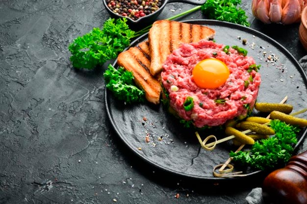

Sopa de cebola
Ingredientes
- 1 dente de alho
- 1 tablete de caldo de carne
- 1 colher de farinha de trigo
- 1/2 lata de creme de leite sem soro
- 2 batatas pré-cozidas picadas
- 2 colheres de manteiga
- 4 xícaras de água fervente
- 400 g de cebola fatiada
- Pimenta do reino a gosto e sal
Modo de preparo
- Refogar na manteiga o alho, a cebola e as batatas.
- Dissolver em 2 colheres de água fria o caldo de carne, sal, pimenta e farinha de trigo.
- Juntar tudo mais a água fervente e cozinhar por 20 minutos.
- Desligue o fogo e acrescente o creme de leite.
- Bata tudo no liquidificador e leve ao fogo.
- Antes de servir, polvilhe com salsa e queijo. Bom apetite.
Ratatouille
Ingredientes
- 2 abobrinhas
- 2 berinjelas
- 2 cebolas
- 3 tomates
- 1 pimentão verde, 1 pimentão amarelo, 1 pimentão vermelho
- azeite a gosto, alecrim a gosto
- alho, sal, louro, manjericão a gosto
- molho de tomate para cobrir o fundo da forma
Modo de preparo
- Corte os vegetais em rodelas finas sem as sementes.
- Cubra o fundo de uma forma com o molho de tomate.
- Monte tudo intercalando com os vegetais.
- Amasse o alho e espalhe por cima acrescentando o sal e o alecrim a gosto.
- Regue com um pouco de azeite e cubra com papel-manteiga ou alumínio.
- Leve ao forno por 40 minutos a uma temperatura de 180° C a 200° C.
Quiche Lorraine
Ingredientes
- 2 xícaras de farinha de trigo
- 1 pitada de sal
- 125 g de manteiga gelada cortada em pedacinhos
- Óleo (para untar)
- 1/2 xícara de bacon picado
- 4 ovos
- 1 xícara de creme de leite fresco
- 2 xícaras de queijo gruyère ralado grosso
- Sal e noz moscada a gosto
- 1/4 de xícara de sálvia fresca inteira
Modo de preparo
- Misture a farinha, o sal e a manteiga com a ponta dos dedos, até formar uma farofa.
- Acrescente 1/2 xícara de água gelada aos poucos, até que a massa fique homogênea.
- Deixe na geladeira, coberta com filme plástico, por 15 minutos.
- Abra a massa e forre a fôrma.
- Prepare a massa básica e forre com ela seis forminhas refratárias individuais, próprias para quiche, de 10 cm de diâmetro. Pode se utilizar uma forma de 30cm de diâmetro.
- Fure a massa com um garfo e leve ao forno moderado (180° graus) para assar por 15 minutos ou até ficar firme, mas sem dourar.
- Em uma frigideira antiaderente, frite o bacon até dourar.
- Retire e deixe escorrer sobre papel toalha.
- Em uma tigela, bata ligeiramente os ovos, junte o creme de leite e o queijo ralado e misture.
- Tempere com sal e noz-moscada e acrescente o bacon.
- Despeje a mistura nas forminhas, sobre a massa pré-assada, distribua a sálvia e volte novamente ao forno por mais 20 minutos ou até começar a dourar e o recheio ficar firme.
Confit de pato
Ingredientes
- 6 coxas e sobrecoxas de pato
- 6 colheres (sopa) de sal grosso
- 3 dentes de alho
- 24 grãos de pimenta
- 18 ramos de tomilho fresco
- 24 folhas de louro
- 2 kg de gordura de pato ou porco
- Especiarias em pó a gosto (cravo da índia, canela, noz-moscada e gengibre)
Modo de preparo
- Esfregue o sal, o alho e a pimenta nas coxas e sobrecoxas de pato.
- Numa travessa coloque o tomilho, o louro, as coxas e sobrecoxas e deixe marinar por 24 horas.
- Passadoo tempo, lave as coxas e sobrecoxas e seque.
- Reserve a marinada.
- Numa panela, aqueça a gordura, coloque o pato.
- Junte a marinada e deixe cozinhar em fogo bem lento (para não fritar) por 3 horas aproximadamente, ou até que esteja macio.
Steak Tartare

Ingredientes
- 400 g de filé mignon (não congelado e limpo)
- 1/2 colher (sopa) de maionese
- 1/2 colher (sopa) de mostarda dijon
- 20 g de pepino em conserva cortado em pedaços pequenos
- 20 g de alcaparras cortadas em pedacinhos bem pequenos
- 10 g de cebolete picada
- 1 colher (chá) de molho inglês
- 1 colher (sopa) de azeite
- sal e pimenta-do-reino a gosto
Modo de preparo
- Corte a carne em em cubinhos bem pequenos.
- Em uma vasilha, juntar todos os ingredientes e misturar bem, sem amassar a carne.
- Molde o steak tartare em um prato - use as mãos ou uma tigelinha de sopa ou iogurte.
- Para decorar, salpique cebolete picada e um fio de azeite e sirva com torradas.